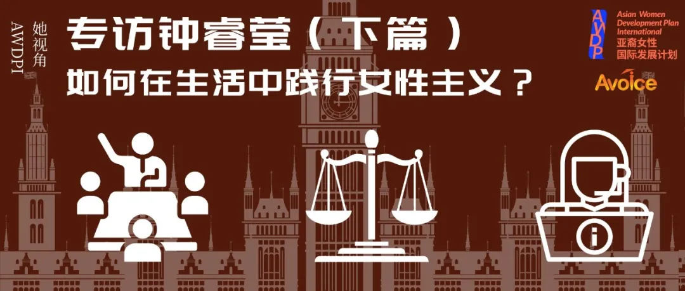

冬令时的午后，伦敦的天空已悄然暗下来，稀稀落落的行人让错综复杂的街道显得些许冷清。然而，在伦敦最大的家庭暴力庇护与转介中心Hestia Life Beyond Crisis 的办公室里，电话铃声依旧断断续续。
钟睿莹早已习惯了这样的节奏——接起电话、记录信息、评估风险、联系庇护资源，每一个环节都要求她精准而迅速。电话另一端寻求帮助的女性，往往处在濒临崩溃的边缘，她们语气急促地讲述着刚经历的暴力创伤。
每一次通话，都在考验接线员的沟通能力、耐心，以及对流程的熟悉程度。对钟睿莹而言，这份工作不仅仅是接通电话这么简单，它更是在维系一张性暴力幸存者的社会网络。
本期的“她视角”专栏将继续讲述钟睿莹的故事。在上次的访谈中，她告诉AWDPI，她所践行的女权主义是一种不断延展、永无尽头的旅程。当一位女性主义者从书斋走向现实生活时，她的“女性主义”宣言能在多大程度上，以何种方式得到践行？
钟睿莹
-
剑桥大学多学科性别研究专业在读硕士
-
研究方向聚焦在性别暴力、文化遗产与集体创伤
（以下为钟睿莹的自述，文字略有删减）
困在制度里的家暴求助者
英国家庭暴力治理的制度建设可以追溯到上世纪七八十年代的女性运动。到了九十年代以后，政府逐渐建立起跨部门的合作机制，例如由内政部、警察和社会工作系统共同参与，并推动家庭暴力被纳入刑事犯罪范畴，如2004年通过的《家庭暴力法案》。
在像 Hestia Life Beyond Crisis 这样的机构里，依然可以看到这种多方协作的模式。它并不完全隶属于政府，很多服务是由社区和社会组织共同完成的。不过，在实际工作中，我也发现这种模式存在一些问题。
**最明显的是转介效率比较低。**因为涉及多个机构，受害者往往需要在不同部门之间反复被转介，整个过程非常漫长。在我参与协助的案例中，很少有女性能够在当天就顺利进入庇护所。
另外，不同地区、不同机构对家庭暴力的理解和执行标准也不完全一致，受害者获得的帮助质量差异很大。还有一些求助者的特殊需求很难被满足，比如行动障碍或心理健康问题。如果庇护机构认为自己无法提供相应支持，通常就只能拒绝接收。这类同时面临多重困难的人群，能接纳他们的庇护资源本来就非常有限。
性少数群体的处境同样比较复杂。英国很多庇护所是按单一性别设立的，这往往会把跨性别群体排除在外。而跨性别群体更容易同时面临多种困难，因此在现实制度和社会规范的限制下，他们反而更难获得家庭暴力救助资源。
虽然制度强调多机构合作，但不同部门之间的信息共享其实并不充分，导致整个支持体系像被拆成了很多碎片。很多幸存者都会向我抱怨，说她们已经向不同机构反复讲述过自己的经历，但每一次都要从头再说一遍。
“这不是家暴，是故意杀人”
相比之下，我国的情况呈现出另一种特点。家庭暴力问题真正进入公共讨论是在上世纪九十年代之后，跨国NGO合作和国际资金支持推动了相关研究和立法探索。
不过，我国推动家暴相关议题的人士往往需要依托体制内渠道开展工作，这也使得家庭暴力支持体系整体呈现出较强的行政化和法律导向特征。
目前国内的支持体系，更多是通过法律和案件处理渠道来应对家庭暴力。它常常被当作司法问题，由公安和法院处理，**而没有被充分当作一个需要社会系统共同应对的公共议题。**社会组织能够发挥的空间相对有限。
这也容易让家庭暴力被矮化成一种**“家庭纠纷”。当出现极端案件时，很多公众会强调“这不是家暴，而是故意杀人”**。这种说法其实反映出在主流认知中，“家暴”本身还没有被当作一种严肃的社会暴力来对待。结果就是只有当案件发展到极端暴力、完全进入刑事体系时，才会引起足够重视，而家庭暴力作为一种长期存在的社会问题，却缺乏系统性的讨论和应对。
把家庭暴力视为社会问题，不仅涉及法律是否完善，还包括社会服务支持、公众教育、医疗系统、社工体系、社区组织以及司法系统之间是否能够形成联动。从预防到干预，再到康复，都需要完整的支持网络。
但在我国，一旦社会层面的支持机制开始出现，往往很快会被纳入行政体系之中，随后逐渐被边缘化。这也导致公众话语在无形中回避“家暴”这一概念本身，而只关注个别刑事案件。久而久之，家庭暴力背后长期的控制关系、性别不平等以及社会支持缺失等深层原因也被不断淡化，最终只剩下孤立的刑事案件。
只有制度发生根本性转变
求助者才能真正受助
有一天，我接到一位妇女的求助电话。我仔细记录了她的情况，并和团队讨论，但最终判断她不符合庇护所的接收标准。按照流程，我只能回拨电话把结果告诉她，并提供其他机构的联系方式。
可就在那一刻，她突然崩溃了。她哭着说，她正是从我提供的那个号码被转介过来的，自己一直在不同机构之间被推来推去，已经筋疲力尽，于是把所有愤怒都倾泻到我身上。
那通电话对我的冲击很大。虽然我只是接线员，没有决策权，但仍然感到非常沮丧。事后，经理安慰我，并提醒我要学会区分求助者的情绪和自己的情绪，不能让自己完全陷进去。
那时，我第一次真切地意识到，英国对家暴幸存者的支持体系即便相对完善，却仍存在难以弥补的漏洞。而我虽然只是体系中很小的一部分，却也可能在无形中成为让身处边缘的女性失望的一环。
这件事发生在我大二的时候，也成为我思考方向的转折点。我逐渐意识到，**如果制度本身不发生改变，个人能够发挥的力量其实非常有限。**同时，我也开始理解，社会工作不能仅靠同情心支撑。过度卷入情绪，不仅会消耗自己，也可能让求助者更加绝望。真正的专业能力，是在同理心和边界之间找到平衡。
后来，在不同国家的观察和实践中，我逐渐发现，无论是英国还是中国，家庭暴力问题虽然呈现出不同面貌，但背后存在相似困境——它往往没有被真正当作结构性问题来理解，有时被简化为流程问题，有时被视为家庭私事，更多时候只有进入刑事案件才会受到重视，而性别制度、经济结构和社会支持缺失等更深层的原因，反而被忽略。
也正因为如此，我逐渐把关注重心转向知识生产。在我看来，改变往往始于重新认识问题本身。研究不仅可以揭示性别暴力背后的结构矛盾，也能够打破把暴力简单归为个案的叙事方式，让人们重新从社会和历史视角理解这些问题。同时，跨文化的学术对话，也能让不同国家的经验相互照见，而不是各自陷入孤立的路径。
改变发生在微小却持续的坚持中
在不断深入这些议题的过程中，人很容易看到世界的不公平，甚至产生无力感。但我始终相信，在清醒地看见问题之后，依然选择继续前行本身就是一种很重要的力量。很多改变，往往正是在这种看似微小却持续的坚持中慢慢发生的。
对于正在学习女性主义的年轻学生，我有几个想要分享的关键词：
首先是共情。在学习和参与相关议题的过程中，我们会不断接触到处境截然不同的人。他们的经历、情绪甚至选择，可能都和我们自身经验相距甚远。但正是这种差异，提醒我们要学会真正倾听，而不是急于判断。
第二，是保持灵活与开放。性别研究本身就是一个不断被讨论、修正甚至推翻重建的领域，很少有哪一种理论可以解释所有问题。我始终觉得，比起急于寻找标准答案，更重要的是允许自己在不同观点之间游走，在不确定中持续思考。很多新的理解，往往正是在这种开放状态中出现的。
第三，是对自己所处位置的反思和批判。我们每个人在表达观点、做研究或参与行动时，都不是站在完全中立的空间里。我们的成长背景、社会身份和所处语境，都会影响我们如何理解世界。我常常提醒自己去思考：我的视角正在放大哪些经验？又是否忽略了某些声音？这种持续的自我反思，其实也是理解他人与社会结构的重要一步。
1
END
1
撰稿｜杨蔚钧
编辑｜伊哲
封面｜池一诺